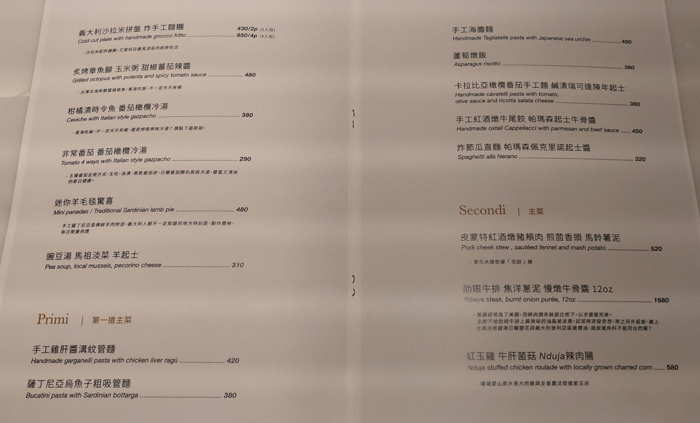

[竹北] GD Restaurant
| 餐廳名稱: | GD Restaurant |
|---|---|
| 地 址: | 新竹縣竹北市十興三街123號 |
| 營業時間: | 週二至週日 18:00-1:00 (last order 21:00) |
| 每週一 公休 | |
| 電話 : | 03 6688982 |
之前吃過 Noi 私廚 辦的 義大利千層麵快閃活動， 那個活動是Noi 私廚 找個外縣市場地，事先找好客人， 那一餐只提供義大利千層麵。 那個千層麵很好吃，敢拿這一道菜出來弄快閃活動，的確有兩把刷子。
然後該團隊擴大營運，決定開餐廳了，就是 GD Restaurant 。 今天是試營運的第一天，剛好也有時間，就來試試看。我應該是第一位報導 GD Restaurant 的吧。
這間餐廳定位為高級餐廳，高級的裝潢，高級的價格。 低消是一人一杯飲料，跟 竹北 小河馬 一樣。
飲料的菜單，但是無酒精的飲料很少，只有水、咖啡、茶是無酒精。

食物的菜單，菜單略特殊，都是比較不常見的義大利菜。 最討厭的是竟然沒有那個出名的千層麵。 
因為試營運，所以送一份麵包。麵包是自製的，很香，鬆軟。旁邊那個似乎是炸義大利麵，也是香香脆脆，好吃。 但是沒經驗，馬上就吃光了，之後兩道義大利麵的醬汁， 都有剩一些，拿來沾麵包，非常合適，但今天無緣這樣子吃了。
臘肉腸飯球，這道菜小失望，號稱是用剩食做的，也就是義大利人將剩飯、香腸的邊邊角角與起司，做成一球，炸出來的。吃剩食的觀念很好，可是覺得肉太少，味道也似乎輕了點。
點的調酒 - 憂鬱的鳳梨先生，除了鳳梨味與酒味，多了一個苦味，也許是用苦一點的酒吧，代表憂鬱。還不錯喝，可是能不能研發一個 快樂的鳳梨先生，不需要苦味啊。
從官網得知，調酒師似乎也是有點來頭，曾經開過酒吧，酒吧有找廚師弄下酒菜，目前這樣跟 Noi的主廚聯手，強強合作，應該是1加1大於2。而且供餐只到9點， 9點之後，就是調酒師的天下了，可是那下酒菜怎麼辦呢?
雞肝管麵，這道菜水準很不錯，味道濃烈，鹹香為主要味道，雞肝的微苦也發揮得不錯。這家店似乎很喜歡發揚苦味。小河馬 也 是有一個 麵包 配 雞肝抹醬 的菜，不錯吃，這道 雞肝管麵 吃完麵剩下的醬，超想拿麵包來沾著吃。
烏魚子管麵，烏魚子是薩丁尼亞來的，但也灑不多，不過味道很好，也許不習慣重口味的人會覺得太鹹，我是覺得還好，鹹香有勁。 吃完後底部剩一大匙有豐富味道的油，要是麵包沾來吃，多好啊。
因為蝦賣完了，所以改點這個 紅玉雞 牛肝菌菇 辣肉腸，雞是用南投只用玉米跟紅玉紅茶養出來的紅玉雞， 去骨，弄成肉捲，中間餡料是牛肝菌菇與辣肉腸，所以主味是鹹，再加一個 微辣的味道，融合的很棒，不常吃到，不錯吃。
還要特別稱讚那兩片紫玉米，不知是哪裡找來的品種，加上調味跟烤，味道跟懷念的夜市烤玉米很像，很想請主廚烤一根完整玉米給我吃。

最後加點一個甜點，巧克力慕斯，這個巧克力不是進口的喔，是屏東某公司用台灣自己種的巧克力豆做出來的。中心是巧克力慕斯，軟軟的，常溫，放上自製餅乾、藍莓、堅果等。 整個甜點蠻好吃的。店家再度成功發揚苦味，其實甜味比苦味濃，苦味只有一點點。
唉…最後加服務費花了2618元，好高級啊。
GD Restaurant 的定位就是高級餐廳，不過精緻度也頗高， 我覺得水準接近 彼刻 了，價格比 彼刻 便宜一些。 服務人員都很親切，加水、收餐盤 都很勤快。發現盤子食物殘醬太多，也會主動來換盤。 今天是試營運第一天，很多熟客來訪，非常熱鬧，彷彿置身上流社會。祝福 GD Restaurant 生意興隆。